Forja e gemas
Como abrir sockets, combinar gemas e forjar equipamentos, com as chances e custos reais deste servidor.
1. Socket
Abre um espaço para gema no equipamento. Até 3 por peça.
2. Combinar
Duas gemas iguais viram uma de nível acima.
3. Forjar
Coloca a gema (com uma Refining Gem) no socket e sobe o nível dela.
Onde fazer
| Ferreiro | Onde | Faz |
|---|---|---|
| Blacksmith - Goldie | Argent 2193, 2706 | Socket, Combinar, Forjar |
| Blacksmith - Smithy | Shaitan 902, 3495 | Socket, Forjar |
| Grocery - Amos | Shaitan 840, 3585 | Combinar |
| Blacksmith - Bash | Icicle 1344, 529 | Socket, Forjar |
| Blacksmith - Uncle Jin | Dream Island | Forjar, Socket (no menu: "Fusion") |
| Physician - Strong | Dream Island | Combinar |
1. Abrir socket
- Fale com um ferreiro e escolha Socket.
- Coloque o equipamento, um
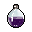
Equipment Stabilizer e um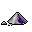
Equipment Catalyst (os dois na aba Forging da Store, 150 mil cada). - Pague o gold: 50 mil × (sockets que a peça já tem + 1): 50 mil o 1º, 100 mil o 2º, 150 mil o 3º.
Sempre funciona (100%). Máximo de 3 sockets por peça. Apparels (visuais) não aceitam socket nem gema.
2. Combinar gemas
- Fale com um ferreiro que Combina (Goldie ou Amos).
- Coloque um Gem Composition Scroll (vende no Amos de Shaitan e no Strong da Dream Island) e duas gemas iguais, do mesmo nível.
- Custa 5 mil de gold.
| Subir para o nível | 2 | 3 | 4 | 5 | 6 | 7 | 8 | 9 |
|---|---|---|---|---|---|---|---|---|
| Gema de atributo | 100% | 90% | 80% | 70% | 60% | 50% | 40% | 30% |
| Refining Gem | 100% | 100% | 100% | 95% | 90% | 85% | 80% | 75% |
Se falhar, as duas gemas somem. As gemas vão até o nível 9 (as do Black Dragon até o 2).
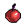
3. Forjar (engastar e subir a gema)
- Fale com um ferreiro e escolha Forge.
- Coloque o equipamento (com socket livre ou já com aquela gema), a gema e uma
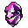
Refining Gem. - As duas gemas precisam ter nível ≥ ao próximo nível do socket: para levar um socket de Gem of Rage do nível 2 ao 3, gema de nível 3+ e Refining Gem de nível 3+.
- Pague: 100 mil × (1 + soma dos níveis das gemas já engastadas na peça).
| Forjar até o nível | 1–3 | 4 | 5 | 6 | 7 | 8 | 9 |
|---|---|---|---|---|---|---|---|
| Chance neste servidor | 100% | 75% | 65% | 55% | 45% | 35% | 25% |
Se falhar, você perde só as gemas; o equipamento fica intacto. A gema tem que combinar com o tipo da peça (tabela abaixo).
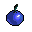
Gemas: efeito, nível máximo e onde engastam
| Gema | Nível máx. | Efeito no nível máximo | Onde engasta |
|---|---|---|---|
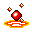 Broken / Cracked / Chipped Gem of Rage | 9 | STR +8 / +12 / +16 | Armas |
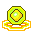 Broken / Cracked / Chipped Gem of Soul | 9 | STA +8 / +12 / +16 | Armas |
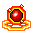 Broken / Cracked / Chipped Gem of Colossus | 9 | CON +8 / +12 / +16 | Escudo, armadura, tatuagem |
| Broken / Cracked / Chipped Gem of Striking | 9 | DEX +8 / +12 / +16 | Luvas (a Broken também em arco e arma de fogo) |
| Broken / Cracked / Chipped Gem of the Wind | 9 | AGI +8 / +12 / +16 | Botas |
| Gem of Rage / Soul | 9 | STR +15 / STA +15 | Armas |
| Gem of Colossus | 9 | CON +15 | Escudo, armadura, tatuagem |
| Gem of Striking | 9 | DEX +15 | Luvas |
| Gem of the Wind | 9 | AGI +15 | Botas |
| Great Gem (Rage, Soul, Striking, Colossus, Wind) | 9 | +18 no atributo | Igual à Gem do mesmo nome |
| Fiery Gem | 9 | Ataque +24 | Espada |
| Furious Gem | 9 | Ataque +36 | Espadão, arco, arma de fogo, adaga, cajado |
| Explosive Gem | 9 | Ataque +60 | Arco, arma de fogo |
| Lustrious Gem | 9 | Precisão +30 | Armas e luvas |
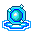 Glowing Gem | 9 | Defesa +30 | Escudo, armadura, tatuagem |
| Shining Gem | 9 | HP máximo +600 | Escudo, armadura, tatuagem |
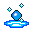 Shadow Gem | 9 | Esquiva +12 | Armas e botas |
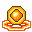 Spirit Gem | 9 | STA +6 | Armas e botas |
| Eye / Soul / Heart of Black Dragon | 2 | Ataque +100 / Def. física +6 / HP +1000 | Armas / armadura / luvas e botas (só do boss) |
O efeito cresce por igual a cada nível (arredondado): Gem of Rage dá +2 no nível 1, +5 no 3, +10 no 6 e +15 no 9.
Melhores gemas por classe
- Cada peça leva até 3 gemas diferentes: colocar a mesma gema de novo só sobe o nível dela, não ocupa outro socket.
- Mas cada família é uma gema diferente: Broken, Cracked, Chipped, Gem e Great Gem do mesmo atributo ocupam sockets separados e somam (Great Gem of Rage + Gem of Rage + Chipped Gem of Rage = +49 de STR no nível 9).
- As de nível máximo 1 (Azrael's, Lock's, Bing's, Feng's, Shark's, Locke's Power) são da Store, baratas e não sobem: servem para começar e depois dão lugar às que sobem até o 9.
- Para quem bate com STR ou ACC, o atributo rende mais ataque quanto mais você já tem: no começo a gema de ataque (Fiery, Furious, Explosive) ganha; com o atributo alto, as três da família ganham.
Champion STR e CON
| Peça | Para começar | Objetivo (nível 9) | Por quê |
|---|---|---|---|
| Espadão | Furious Gem · Broken Gem of Rage · Lustrious Gem | Great Gem of Rage · Gem of Rage · Chipped Gem of Rage | No começo a Furious (+36 de ataque) rende mais; com STR alta, as três de Rage (+18, +15 e +16 de STR no nível 9) passam muito. |
| Armadura / tatuagem | Undead Azrael · Broken Gem of Colossus · Shining Gem | Great Gem of Colossus · Gem of Colossus · Shining Gem | CON dá HP e defesa; a Shining soma +600 de HP no 9. |
| Luvas | 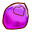 Lock's Hit · Lustrious Gem | Lustrious Gem · Heart of Black Dragon | Precisão para não errar; no fim, o coração do dragão (+1.000 de HP). |
| Botas | 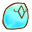 Bing's Dodging · Shadow Gem | Shadow Gem · Heart of Black Dragon · Gem of the Wind | Esquiva e HP; AGI só se quiser atacar mais rápido. |
Crusader AGI até ~60, depois STR
| Peça | Para começar | Objetivo (nível 9) | Por quê |
|---|---|---|---|
| Cada espada (as duas) | Fiery Gem · Broken Gem of Rage · Shadow Gem | Great Gem of Rage · Gem of Rage · Fiery Gem | Espada de uma mão só aceita a Fiery como gema de ataque (a Furious não entra). As duas espadas levam gemas: o efeito conta em dobro. |
| Botas | 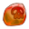 Azrael's Dance · Broken Gem of the Wind · Shadow Gem | Great Gem of Wind · Gem of the Wind · Chipped Gem of the Wind | Até o 60 a build é AGI: as três gemas de Wind somam +49 de AGI no nível 9 (velocidade e esquiva). |
| Armadura | Undead Azrael · Shining Gem | Great Gem of Colossus · Shining Gem · Glowing Gem | O Crusader tem pouca CON: HP e defesa vêm daqui. |
| Luvas | Lock's Hit | Lustrious Gem · Heart of Black Dragon | Precisão e HP. |
Sharpshooter ACC (e um quarto de AGI)
| Peça | Para começar | Objetivo (nível 9) | Por quê |
|---|---|---|---|
| Arco / arma de fogo | Explosive Gem · Broken Gem of Striking · Locke's Power | Explosive Gem · Furious Gem · Lustrious Gem | A Explosive (+60 de ataque) é a melhor gema de arma do jogo e só entra em arco e arma de fogo. A Broken Gem of Striking é a única de ACC que entra na arma. |
| Luvas | Azrael's Aggregation · Broken Gem of Striking | Great Gem of Striking · Gem of Striking · Chipped Gem of Striking | ACC é o dano do Sharpshooter: as três de Striking somam +49 de ACC no nível 9 (cada ponto vale ~6 de ataque no 100 de ACC). |
| Botas | Broken Gem of the Wind · Shadow Gem | Gem of the Wind · Shadow Gem · Heart of Black Dragon | AGI para a velocidade de ataque. |
| Armadura | Shining Gem | Shining Gem · Great Gem of Colossus · Glowing Gem | Só sobrevivência. |
Cleric SPR até o 60, depois CON
| Peça | Para começar | Objetivo (nível 9) | Por quê |
|---|---|---|---|
| Cajado | Azrael's Light · Broken Gem of Soul · Spirit Gem | Great Gem of Soul · Gem of Soul · Chipped Gem of Soul | SPR (STA no código) é a cura, o dano mágico e o SP: as três de Soul somam +49 no nível 9. |
| Armadura | Azrael's Light · Shining Gem | Great Gem of Colossus · Gem of Colossus · Shining Gem | Até o 60, a Azrael's Light (+8 de SPR) também entra na armadura; depois, CON. |
| Botas | Spirit Gem · Shadow Gem | Spirit Gem · Shadow Gem · Heart of Black Dragon | A Spirit Gem soma SPR nas botas. |
| Luvas | — | Heart of Black Dragon | Nada de luva ajuda magia; só o HP do dragão no fim. |
Seal Master CON (70%) e SPR (30%)
| Peça | Para começar | Objetivo (nível 9) | Por quê |
|---|---|---|---|
| Cajado | Azrael's Light · Broken Gem of Soul | Great Gem of Soul · Gem of Soul · Spirit Gem | O dano dos selos vem do SPR. |
| Armadura | Undead Azrael · Broken Gem of Colossus · Shining Gem | Great Gem of Colossus · Gem of Colossus · Chipped Gem of Colossus | A build é CON: as três de Colossus somam +49 de CON no nível 9. |
| Botas | Spirit Gem | Spirit Gem · Shadow Gem · Heart of Black Dragon | |
| Luvas | — | Heart of Black Dragon |
Voyager SPR até o 40, depois SPR e CON
| Peça | Para começar | Objetivo (nível 9) | Por quê |
|---|---|---|---|
| Adaga | Azrael's Light · Broken Gem of Soul · Furious Gem | Great Gem of Soul · Gem of Soul · Chipped Gem of Soul | Adaga aceita a Furious, mas o dano do Voyager é mágico (SPR). |
| Armadura | Undead Azrael · Shining Gem | Great Gem of Colossus · Gem of Colossus · Shining Gem | |
| Botas | Spirit Gem · Shadow Gem | Spirit Gem · Shadow Gem · Heart of Black Dragon | |
| Luvas | — | Heart of Black Dragon |
Ordem: a 1ª gema de cada lista é a que mais rende primeiro. Arma e botas antes da armadura.
Brilho da arma (o +27)
Armas e equipamentos com gema brilham. O tipo das gemas escolhe o efeito; a soma dos níveis das 3 gemas escolhe a força:
| Soma dos níveis | 1–4 | 5–8 | 9–12 | 13+ |
|---|---|---|---|---|
| Brilho | fraco | médio | forte | máximo |
O famoso "+27" é ter três gemas nível 9 na mesma peça: é a conquista de fim de jogo.
| Gem of Rage, custo médio para montar | nível 5 | nível 7 | nível 9 |
|---|---|---|---|
| Combinando sem fruta | 1,1 milhão | 14 milhões | 475 milhões |
| Com a Red Combining Fruit (+20%) | 600 mil | 4,3 milhões | 58 milhões |
Conta com as chances reais, o pergaminho e as falhas. Gemas que caem dos bosses saem de graça e baixam esse custo.
Onde conseguir gemas
- Store, aba Gemas: todas as gemas de atributo e a Refining Gem, nos níveis 1 a 3, pelo custo médio de montar combinando (Gem of Rage: 26,7 mil, 61 mil e 144 mil; Refining Gem: 100 mil, 208 mil e 423 mil). Do 4 ao 9, só combinando.
- Store, aba Forging: também as gemas especiais (Azrael's, Jades de chapéu, Bing's, Chiatan's, Feng's, Lock's, Shark's: 60 a 100 mil; Locke's Power: +3 de precisão em arco e arma de fogo), o Fine Refining Stone (10 mil), os catalisadores de fusão e os de refino e composição (sobem a chance por um tempo, 30 mil).
- Bosses: gemas de atributo (Broken e Cracked na Forsaken City e no Dark Swamp) e, em 25% das recompensas de boss, um vale-gema que vira gema ao usar.
- Monstros do mar: Refining, Shining e Glowing Gem.
- Black Dragon: as gemas do dragão (só dele).
Dicas
- Ordem que mais rende: socket → forjar até o 3 (100%) → só então arriscar 4+, sempre com a Blue Forging Fruit ativa.
- Até o nível 3, comprar ou combinar custa o mesmo; acima, use sempre a Red Combining Fruit: ela corta o custo médio do nível 9 de 475 para 58 milhões.
- Comece pela arma e pelas botas; as gemas certas de cada classe estão em Melhores gemas por classe, acima.